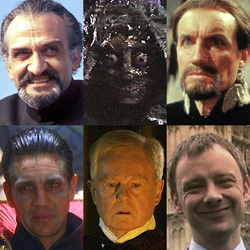

Home| The Doctors| The Companions| The Villians| Show History
|
Home| The Doctors| The Companions| The Villians| Show History |
|
The MasterThe Master is the Doctor's archenemy, a renegade Time Lord who desires to rule the universe. Conceived as "Professor Moriarty to the Doctor's Sherlock Holmes",[104] the character first appeared in 1971. As with the Doctor, the role has been portrayed by several actors, since the Master is a Time Lord as well and able to regenerate; the first of these actors was Roger Delgado, who continued in the role until his death in 1973. The Master was briefly played by Peter Pratt and Geoffrey Beevers until Anthony Ainley took over and continued to play the character until Doctor Who's hiatus in 1989. The Master returned in the 1996 television movie of Doctor Who, and was played by American actor Eric Roberts. The Master has appeared in the revived series, portrayed for one episode by Derek Jacobi before the character regenerated, and otherwise John Simm since then. The Master has also been played by Nicholas Briggs and Gordon Tipple. |
Brendan Davy Monica DuCong'e Eric Eyler Kayleen Garcia Katie Hyche Ryan Moeller |
Christine O'Brien Alex Recinos Julia Schwartz Madeleine Schwartz Ann Marie Skjold Ashly Wilkins |
[Reference Links] |